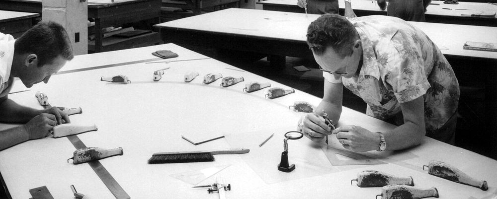

Seminarium dyplomowe 1 · MiNI PW
od listwy szkutnika do sieci neuronowych
Wojciech Jasiński · 2 listopada 2026 · prowadzący: prof. Bohdan Macukow
→ dalej · ↓ dodatki · S notatki · D tryb ciemny · O przegląd · F pełny ekran · C (przytrzymaj) zegar · krzywą w tle można chwytać
Funkcja złożona z wielomianów niskiego stopnia na kolejnych przedziałach, połączonych w węzłach tak, że całość jest gładka.
Funkcja sklejana stopnia $k$: na każdym przedziale $[x_{i-1}, x_i]$ wielomian stopnia $\le k$, a całość ma ciągłe pochodne do rzędu $k-1$.
Niech $\Delta:\ a = x_0 < x_1 < \dots < x_n = b$. Funkcja $s$ jest funkcją sklejaną stopnia $k$ o węzłach $\Delta$, jeśli
$s \in C^{k-1}[a,b]$ oraz $s|_{[x_{i-1},\,x_i]} \in \Pi_k$, $\;i = 1,\dots,n$.
Wymiar przestrzeni $S_k(\Delta)$: $$\dim S_k(\Delta) = \underbrace{n(k+1)}_{\text{współczynniki}} - \underbrace{(n-1)\,k}_{\text{warunki sklejenia}} = n + k.$$
Baza potęg uciętych, $\;(x-t)_+ = \max(0,\,x-t)$:
$$1,\ x,\ \dots,\ x^k,\ \ (x-x_1)_+^k,\ \dots,\ (x-x_{n-1})_+^k$$$(x-t)_+$ to ReLU, stąd związek z sieciami neuronowymi.
Kształt litery zapisany krzywymi, nie pikselami, więc jest ostry w każdym rozmiarze.
Przykład: formaty czcionek TrueType i OpenType (w każdym komputerze i telefonie) zapisują kontury krzywymi Béziera.
Gładkie powierzchnie karoserii, skrzydeł i kadłubów opisuje się splajnami (NURBS).
Przykład: model z programu CATIA lub SolidWorks zapisany w formacie STEP trafia w tej postaci do symulacji i na obrabiarkę CNC.
Animator ustawia kilka klatek kluczowych, a ruch pomiędzy nimi program wylicza jako krzywą.
Przykład: krzywe animacji w programie Blender; ścieżki kamer i obiektów w silniku gier Unity (pakiet Splines).
Trajektoria jako splajn: położenie, prędkość i przyspieszenie zmieniają się płynnie, bez szarpnięć.
Przykład: typ ruchu SPLINE w sterownikach robotów przemysłowych firmy KUKA; wygładzanie toru jazdy w otwartym systemie autonomicznym Baidu Apollo.
Gdy zależność w danych nie jest prostą linią, dopasowuje się do niej splajn zamiast gotowego wzoru.
Przykład: SplineTransformer w bibliotece scikit-learn (Python); modele GAM, np. pakiet mgcv w języku R.
Żeby porównać dwa skany tego samego pacjenta, jeden obraz odkształca się tak, by pasował do drugiego.
Przykład: odkształcenie opisuje siatka B-splajnów (Rueckert i in. 1999), np. w otwartym programie elastix do skanów CT i MRI.
spline (ang.): giętka listwa kreślarska z drewna lub metalu, dociskana ołowianymi ciężarkami, tzw. „kaczkami” (ducks).

Dla małych ugięć ten kształt to naturalna sześcienna funkcja sklejana (twierdzenie Holladaya).
Cel: gładka funkcja przez $n+1$ danych punktów. Najprostszy pomysł: jeden wielomian stopnia $\le n$ (taki wielomian jest dokładnie jeden).
Wniosek: oscylacje biorą się z wysokiego stopnia. Zamiast jednego wielomianu wysokiego stopnia bierzemy wiele wielomianów niskiego stopnia, każdy na swoim przedziale.
Stopień 3 to najniższy, przy którym krzywizna ($s''$) jest ciągła.
Bilans niewiadomych i warunków dla $n$ kawałków:
| niewiadome: każdy kawałek ma 4 współczynniki | $4n$ |
| warunki: kawałek przechodzi przez swoje 2 punkty | $2n$ |
| warunki: ciągłe $s'$ i $s''$ w $n-1$ węzłach wewnątrz | $2n-2$ |
| brakuje: $4n - 2n - (2n-2)$ | 2 |
Brakujące 2 warunki dodaje się na końcach:
dane $y_i$ → $d$ → rozwiązanie $A\,M = d$ → $M_i$ → kawałki
Niewiadome: momenty $M_i = s''(x_i)$; $\;h_i = x_{i+1}-x_i$. Na $[x_i, x_{i+1}]$:
$$\begin{aligned} s(x) = {}& M_i\frac{(x_{i+1}-x)^3}{6h_i} + M_{i+1}\frac{(x-x_i)^3}{6h_i} \\ &+ \Big(y_i - \tfrac{M_i h_i^2}{6}\Big)\frac{x_{i+1}-x}{h_i} + \Big(y_{i+1} - \tfrac{M_{i+1} h_i^2}{6}\Big)\frac{x-x_i}{h_i} \end{aligned}$$Ciągłość $s'$ w $x_i$, $\;i = 1,\dots,n-1$:
$$h_{i-1}M_{i-1} + 2(h_{i-1}+h_i)\,M_i + h_i M_{i+1} = 6\left(\frac{y_{i+1}-y_i}{h_i} - \frac{y_i-y_{i-1}}{h_{i-1}}\right)$$
def thomas(a, b, c, d):
"""a: pod, b: na, c: nad przekątną"""
n = len(b); c, d = c.copy(), d.copy()
c[0] /= b[0]; d[0] /= b[0]
for i in range(1, n): # eliminacja
m = b[i] - a[i] * c[i-1]
c[i] = c[i] / m if i < n-1 else 0
d[i] = (d[i] - a[i] * d[i-1]) / m
for i in range(n-2, -1, -1): # wstecz
d[i] -= c[i] * d[i+1]
return d # M_0 … M_n
Spośród wszystkich funkcji klasy $C^2$ przechodzących przez dane punkty najmniejszą „energię zginania” ma naturalny splajn sześcienny: $$\int_a^b s''(x)^2\,dx \;\le\; \int_a^b f''(x)^2\,dx.$$
Niech $s$ będzie naturalną sześcienną funkcją sklejaną, $s(x_i) = y_i$, i niech $f \in C^2[a,b]$, $f(x_i) = y_i$. Oznaczmy $e = f - s$; wtedy $e(x_i) = 0$ i
$$\int_a^b f''^2 = \int_a^b s''^2 + \int_a^b e''^2 + 2\int_a^b s''e''.$$Wyraz mieszany znika; całkujemy przez części ($s'''$ jest stała, $=c_i$, na każdym przedziale):
$$\int_a^b s''e'' = \big[s''e'\big]_a^b - \sum_i c_i\int_{x_i}^{x_{i+1}}\! e' = 0 - \sum_i c_i\,\big(e(x_{i+1}) - e(x_i)\big) = 0,$$bo $s''(a) = s''(b) = 0$ (warunki naturalne) i $e$ zeruje się w węzłach. Zatem
$$\int f''^2 = \int s''^2 + \int e''^2 \;\ge\; \int s''^2,$$a równość zachodzi tylko, gdy $e'' \equiv 0$, czyli $e$ jest liniowa i zeruje się w węzłach ⇒ $f = s$. $\blacksquare$
Model listwy jest zlinearyzowany: dla małych ugięć krzywizna $\kappa \approx y''$. Pełny problem nieliniowy to krzywa sprężysta (elastica) Eulera.
$f \in C^4[a,b]$, $s$ to splajn zupełny z $s'(a) = f'(a)$, $s'(b) = f'(b)$; $h = \max h_i$:
$$\begin{aligned}\|f - s\|_\infty &\le \tfrac{5}{384}\,h^4\,\|f^{(4)}\|_\infty\\ \|f' - s'\|_\infty &\le \tfrac{1}{24}\,h^3\,\|f^{(4)}\|_\infty\\ \|f'' - s''\|_\infty &\le \tfrac{3}{8}\,h^2\,\|f^{(4)}\|_\infty\end{aligned}$$Stałe $\tfrac{5}{384}$ i $\tfrac{1}{24}$ są optymalne.
Każdą funkcję sklejaną stopnia $k$ zapisujemy jako $s(x) = \sum_i c_i\,B_{i,k}(x)$.
$B_{i,0} = 1$ na $[t_i, t_{i+1})$, poza nim $0$;
$$B_{i,k} = \omega_{i,k}\,B_{i,k-1} + \big(1-\omega_{i+1,k}\big)\,B_{i+1,k-1},$$gdzie $\omega_{i,k}(x) = \dfrac{x - t_i}{t_{i+k}-t_i}$. Każdy stopień to średnia ważona dwóch sąsiednich funkcji niższego stopnia.
Po co: zmiana jednego $c_i$ zmienia krzywą tylko lokalnie, a układy równań są pasmowe, więc szybkie. Dlatego to standardowy zapis splajnów w CAD i bibliotekach numerycznych.
Dla węzłów równoodległych (całkowitych):
$$B_k = \underbrace{\chi_{[0,1)} * \chi_{[0,1)} * \dots * \chi_{[0,1)}}_{k+1\ \text{razy}}$$Krzywą wyznaczają punkty kontrolne $P_0,\dots,P_n$, które ją „przyciągają”, ale krzywa nie musi przez nie przechodzić:
$$C(t) = \sum_{i=0}^n \binom{n}{i} t^i (1-t)^{n-i}\,P_i,\quad t \in [0,1]$$Przeciągnij punkty blisko siebie: wersja równomierna robi pętle.
Chaikin (1974): każdy odcinek $P_iP_{i+1}$ zastąp punktami
$$Q_i = \tfrac34 P_i + \tfrac14 P_{i+1},\qquad R_i = \tfrac14 P_i + \tfrac34 P_{i+1}.$$Kontury: DejaVu Sans (wolna licencja).
cubic-bezier()Ten sam splajn można zapisać na dwa sposoby; podstawowe operacje są tanie ($n$ = liczba punktów).
Kawałkami: dla każdego przedziału współczynniki jego wielomianu. Wartość liczy się najszybciej.
W bazie B-splajnów: węzły i współczynniki $c_i$. Obliczenia stabilne, zmiany lokalne; tak zapisują splajny programy CAD i biblioteki (np. SciPy).
| Operacja | Jak | Koszt |
|---|---|---|
| wyznaczenie splajnu przez $n$ punktów | układ trójdiagonalny | $O(n)$ |
| wartość $s(x)$ w punkcie | znaleźć przedział, policzyć wielomian | $O(\log n)$ |
| wygładzenie $n$ pomiarów | układ pasmowy (Reinsch) | $O(n)$ |
| narysowanie krzywej | podział na $m$ krótkich odcinków | $O(m)$ |
Pomiary mają szum, więc nie chcemy przechodzić przez punkty, tylko blisko nich:
$$\min_f\ \underbrace{\sum_{i} \big(y_i - f(x_i)\big)^2}_{\text{dopasowanie}} + \lambda \underbrace{\int f''(x)^2\,dx}_{\text{krzywizna}}$$Sieć z jedną warstwą ukrytą, $\operatorname{ReLU}(x) = \max(0,\,x)$:
$$f(x) = c + \sum_{j=1}^{H} v_j\,\operatorname{ReLU}(w_j x + b_j)$$Zwykła sieć (MLP): na krawędziach liczby (wagi), w neuronach ta sama stała funkcja, np. ReLU.
KAN odwrotnie: na każdej krawędzi uczona funkcja jednej zmiennej $\varphi$, w neuronach tylko suma.
Na zakręcie pasażera dociska siła proporcjonalna do krzywizny toru $\kappa$ (przy prędkości $v$: $a = v^2\kappa$).
Demo: ten sam tor jako krzywa tylko $C^1$ i jako splajn $C^2$; na dole przeciążenie w $g$.
Cienka płyta zamiast listwy: przy warunkach $f(\mathbf p_i) = y_i$ minimalizujemy
$$\iint \big(f_{xx}^2 + 2f_{xy}^2 + f_{yy}^2\big)\,dx\,dy$$Przeciągnij punkty: obraz wygina się jak cienka płyta.
Funkcja sklejana to kawałki wielomianów niskiego stopnia, połączone gładko w węzłach.
Skąd te własności: niski stopień chroni przed oscylacjami, gładkie sklejenie usuwa załamania, a podział na kawałki daje lokalność i rzadki układ równań.
Pytania?
Prezentacja z interaktywnymi demami (najwygodniej na komputerze).
Teoria
I. J. Schoenberg, Contributions to the problem of approximation of equidistant data by analytic functions, Quart. Appl. Math. 4 (1946), 45–99, 112–141.
J. C. Holladay, A smoothest curve approximation, Math. Tables Aids Comput. 11 (1957), 233–243.
C. A. Hall, W. W. Meyer, Optimal error bounds for cubic spline interpolation, J. Approx. Theory 16 (1976), 105–122.
M. G. Cox, The numerical evaluation of B-splines, IMA J. Appl. Math. 10 (1972), 134–149; C. de Boor, On calculating with B-splines, J. Approx. Theory 6 (1972), 50–62.
C. de Boor, A Practical Guide to Splines, Springer 1978 (wyd. popr. 2001).
Z. Fortuna, B. Macukow, J. Wąsowski, Metody numeryczne, WNT; D. Kincaid, W. Cheney, Analiza numeryczna, WNT 2006.
Grafika i CAD
G. Farin, Curves and Surfaces for CAGD, 5th ed., Morgan Kaufmann 2002; L. Piegl, W. Tiller, The NURBS Book, Springer 1997.
E. Catmull, R. Rom, A class of local interpolating splines, w: Computer Aided Geometric Design, Academic Press 1974; C. Yuksel, S. Schaefer, J. Keyser, Parameterization and applications of Catmull–Rom curves, CAD 43 (2011).
G. Chaikin, An algorithm for high-speed curve generation, CGIP 3 (1974); C. Loop, J. Blinn, Resolution independent curve rendering using programmable graphics hardware, SIGGRAPH 2005.
Statystyka i uczenie maszynowe
C. H. Reinsch, Smoothing by spline functions, Numer. Math. 10 (1967); G. Kimeldorf, G. Wahba, A correspondence between Bayesian estimation on stochastic processes and smoothing by splines, Ann. Math. Stat. 41 (1970).
G. Wahba, Spline Models for Observational Data, SIAM 1990; P. J. Green, B. W. Silverman, Nonparametric Regression and Generalized Linear Models: A Roughness Penalty Approach, Chapman & Hall 1994; T. Hastie, R. Tibshirani, J. Friedman, The Elements of Statistical Learning, 2nd ed., Springer 2009, rozdz. 5.
F. L. Bookstein, Principal warps: thin-plate splines and the decomposition of deformations, IEEE TPAMI 11 (1989); M. Unser, Splines: a perfect fit for signal and image processing, IEEE SPM 16 (1999).
R. Balestriero, R. Baraniuk, A spline theory of deep networks, ICML 2018; Z. Liu i in., KAN: Kolmogorov–Arnold Networks, arXiv:2404.19756 (2024).